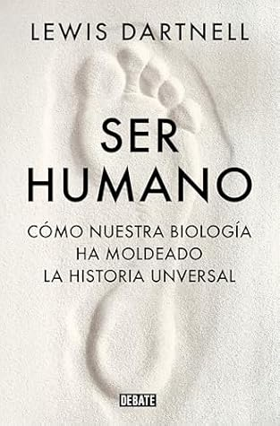

Ser humano: Cómo nuestra biología ha moldeado la historia universal
Reseña por Jorge I. Zuluaga

Ver reseña en GoodReads (necesita cuenta)
"Ser humano" no es la excepción a ese modus scribendi de Dartnell.
En menos de 300 páginas esboza una Historia de la humanidad centrada alrededor de cómo nuestra biología ha determinado o afectado profundamente algunos eventos decisivos en el devenir humano en la Tierra. La tesis parece ser bastante "esencialista" aunque no es de esperar menos de un biólogo como él. Aún así Dartnell reconoce en algunos apartes que no todo ha sido estrictamente determinado por nuestra constitución como animales o por nuestra relación con otros organismos con los que convivimos en los ecosistemas. Sin embargo la suposición del esencialismo (que no es del todo inocente, ni entraña consecuencias desafortunadas como ya sabemos) en este libro funciona como una herramienta divulgativa que sirve para exponer conexiones increíbles entre eventos históricos y fenómenos de la biología humana que no esperarías que existen. Aquí radica su originalidad.
El libro es así pues, una deliciosa mezcla de buena ciencia, sociología, biología, neurociencias y psicología, con una alta dosis de buena historiografía.
¡De todo mi gusto!
Debo confesar, sin embargo, que los primeros capítulos me causaron alguna dificultad; incluso me vi tentado a abandonar el libro por algunas afirmaciones que encontré allí y que he leído ya no se sustentan.
Me refiero a su tratamiento de algunos temas álgidos tales como el origen de las relaciones sociales o los roles de los sexos, que, a mi buen saber y entender, no esta muy informado. Sugiere, por ejemplo, que en la prehistoria la división sexual del trabajo estaba claramente definida, los hombres se dedicaban a la cazan y las mujeres a la recolección y las crías. Una multitud de autoras y autores han corregido sistemáticamente esta creencia tan extendida.
También asume de manera simplificada que las sociedades humanas se parecen más a las de los chimpancés, con su dominancia masculina y su agresividad, en lugar de a la de los bonobos en la que el liderazgo de las hembras es reconocido así como el hecho de ser sociedades más pacíficas. ¿Por qué íbamos a creer, basándonos exclusivamente en el comportamiento humano en tiempos históricos -y vale la pena aclarar, no existió en todas las culturas- que la humanidad del pasado se comportaría de esa manera?. Podrían haber existido formas de organización diversas, posiblemente un espectro casi continuo entre las de nuestros primos cercanos, Chimpances y Bonobos, que determinaron las organizaciones sociales primigenias. Es más, no solo está última idea es relativamente aceptada en la literatura antropológica sino que es casi intuitivo que las capacidades lingüisticas humanas no solamente nos hicieron distintos de nuestros primos antropoides en temas tecnológicos o artisticos, sino que seguramente sirvieron para crear sociedades mucho más diversas.
Superados estos capítulos que contienen lo que para mí es un material debatible, Dartnell se sumerge en otros aspectos de la historia en los que no existen debates antropológicos tan álgidos, tales como el rol de las enfermedades y la manera en la que ellas determinaron las relaciones entre sociedades del pasado, o el papel de la demografía, las drogas psicoactivas y los sesgos cognitivos.
Me quedo con un montón de datos y la tarea de leer el primer libro de esta serie -según me entere en la introducción de "Ser humano"-, es decir "Abrir en caso de apocalipsis" que es el único que me falta leer de Dartnell. Los otros, "Orígenes" (el segundo de esta serie) y "Astrobiología", ya fueron devorados y disfrutados.